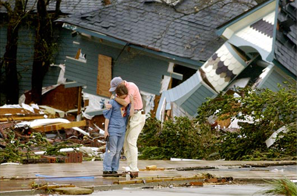
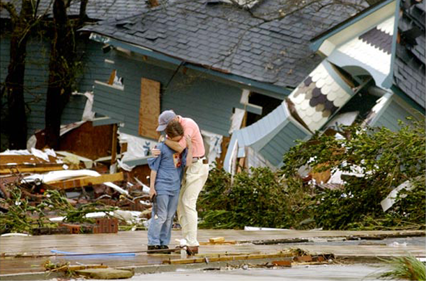
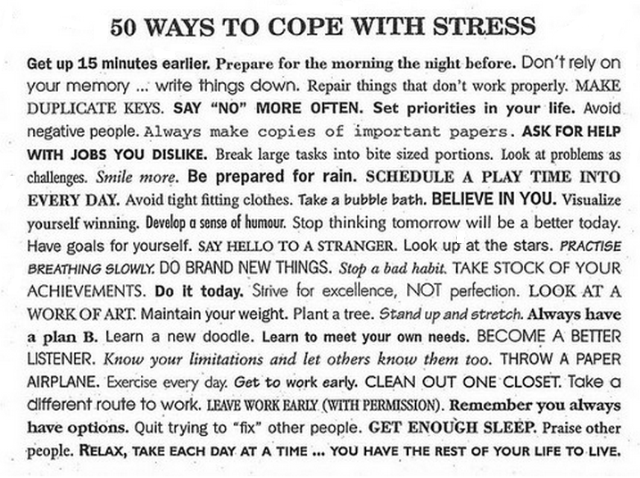
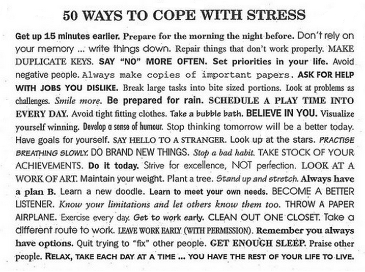

..a state of mental or emotional strain or tension resulting from adverse or very demanding circumstances
..the physical or emotional response we have to events that threaten or challenge us
..the non-specific response of the body to any demand for change

“Stress in addition to being itself, was also the cause of itself, and the result of itself.”
 
.. unpredictable large scale events


.. significant life changes


.. daily, minor irritations


 
